Лабораторная работа №8. Тема: "Поиск и устранение неисправностей"
<---- Обратите внимание на консольный сервер в левой части экрана, вам следует использовать этот сервер для выполнения лабораторной работы
Цель работы
- Восстановление загрузчика системы, работа с каталогом /boot;
- восстановление пароля администратора;
- подготовка дампа для отправки разработчикам.
Оборудование, ПО:
Виртуальная машина или компьютер под управлением ОС AstraLinux 1.7 в режиме защищенности "Воронеж" или выше.
Ход работы:
Что будем делать сейчас?
В данной лабораторной работе мы обсудим основные ошибки, которые часто возникают в ходе эксплуатации и работы с Astra Linux.
Стоит уточнить, что не все описанные в лабораторной работе инструменты и ситуации вы сможете повторить на виртуальной машине, которую вы получили от авторов курса.
Ломаем раздел boot
А когда это может быть полезно?
Раздел /boot может выйти из строя по разным причинам, чаще всего - это переполнение раздела /boot. Случится это может, например, если вы установили новую версию ядра, не заменив или не удалив предыдущее ядро.
Раздел /boot, если вы устанавливали ОС с LVM-разделом, как правило имеет размер в 500 Мб.
На тестовой машине, умышленно приведем систему к будущей неработоспособности.
Для начала, проверим какой у нас объем свободного места на /boot, с помощью команды:
df -hКак можно заметить, раздел /boot наполовину занят текущим ядром ОС Linux.
Сделаем умышленную ошибку и установим новое ядро, не удалив старое:
apt install linux-image-5.10И посмотрим объем раздела теперь.
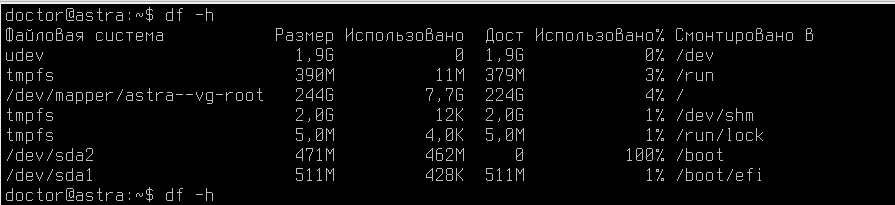Заполнен! И что же будет, если мы перезагрузим нашу операционную систему?
sudo rebootGRUB предлагает нам несколько ядер для загрузки. Попробуем загрузиться.
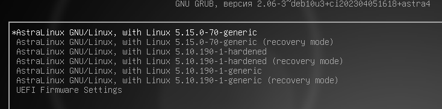Выбираем ядро, и в итоге - ничего! Долгое ожидание загрузки ядра ни к чему не приведет.
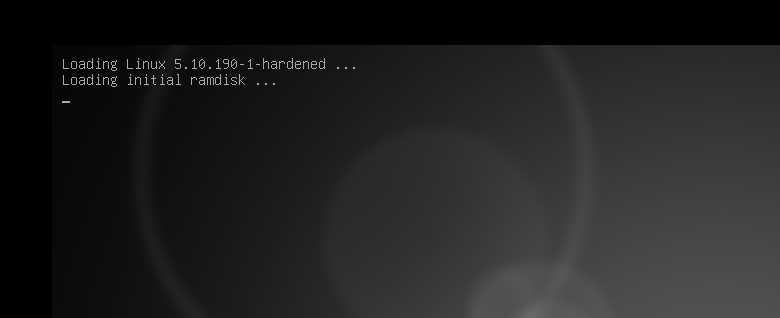Сломали систему, теперь пора чинить!
P.S. Возможно, в вашем случае ошибка будет примерно такой:
- - - [ end Kernel panic - not syncing: VFS: Unable to mount root fs on unknow-block(0,0)Исправляем неисправность
Для исправления нам нужно загрузиться в "Режим восстановления". Для этого:
- Подключить к виртуальной машине установочный образ Astra Linux 1.7;
- Загрузиться с установочного диска;
- Выбрать "Режим восстановления";
4. Далее пройдите по стандартным настройкам режима восстановления (установка языка, времени, раскладка клавиатуры - все эти настройки могут быть любыми и не влияют на работоспособность режима восстановления);
5. На следующем шаге необходимо выбрать устройство корневой файловой системы. Вероятно, данный шаг вызовет у вас вопросы - что нужно подключать? Что это за "корневое устройство"?
Тут потребуется вспомнить, на каком разделе вашего диска находится корневая директория - /
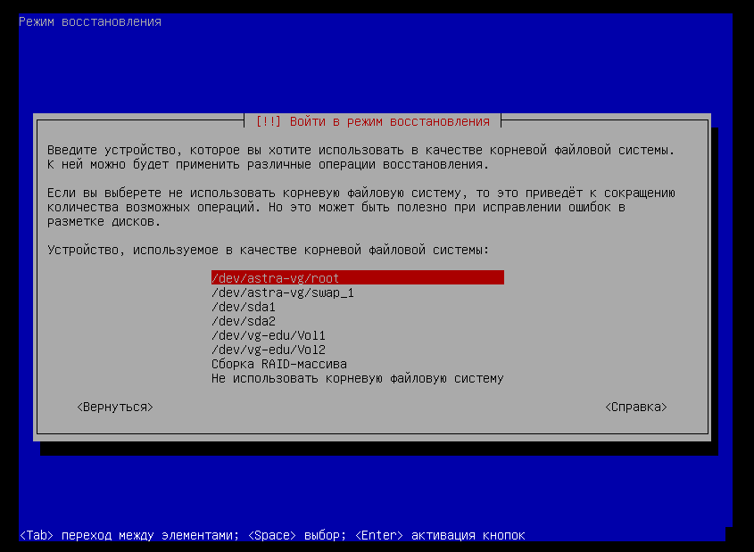В случае LVM массива, который был инициализирован в ходе установки операционной системы, зачастую это /dev/astra-vg/root
6. Далее система предлагает смонтировать /boot, внимательно прочитайте описание вопроса, если раздел /boot сломан, то монтировать его не нужно, ведь со смонтированным устройством тяжело работать и существенно сужается возможный инструментарий. В нашем случае, мы будем удалять лишние установленные ядра, поэтому примонтировать раздел нужно.
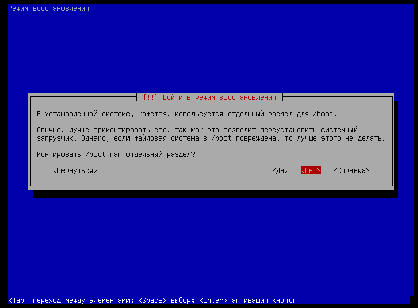7. Запускаем командную оболочку на корневом разделе
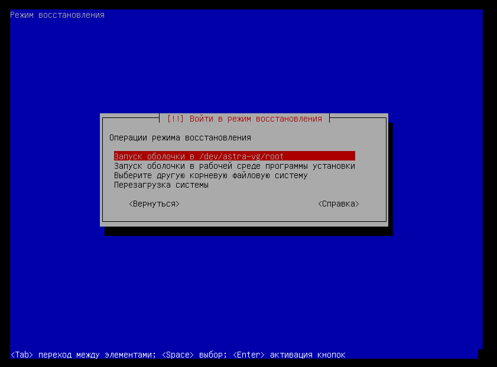8. Если все правильно, то по итогу вы получаете Bash-shell вашей "сломанной" операционной системы. И здесь можно исправить все ошибки, которые приводят к неудачному запуску операционной системы.
Например:
- Испорченный /boot
- Испорченный файл /etc/fstab
- Неправильно установленные драйвера или модули ядра
9. Затем, нажмите одновременно сочетание трех клавиш - CTRL + ALT + F2 и нажмите Enter на черном фоне.
Введите команду:
chroot /targetМы в системе, а что дальше?!
В примере мы установили множество версий ядра Linux, удалим все "старые".
Посмотрим, что у нас есть сейчас:
ls -laА затем удалим все старые версии ядра:
rm -rf *5.4.0-162-generic
rm -rf *5.10.190-1-generic
rm -rf *5.15.0-33-generic
rm -rf *5.15.0-70-genericПосле удаления всего лишнего, обновим информацию о доступных ядрах в initrd:
update-initramfs -t -u -k 5.15.0-83-genericСтоит добавить, что зачастую даже если вы столкнулись с неработоспособностью ОС до обновления ядра, указанные выше действия могут помочь восстановить загрузчик GRUB.
Это нужно знать!
Загрузочный RAM диск (Initrd) это образ корневой файловой системы, который монтируется до того как настоящая корневая фс будет доступна. Initrd связан с ядром и загружается как часть ядра в процессе загрузки системы. Ядро монтирует образ initrd в котором находятся необходимые модули для монтирования корневой фс и уже дальнейшего перехода в этот корень как основной.
После обновления initrd, необходимо обновить загрузчик grub:
update-grubПосле этого из режима восстановления можно выйти:
exitА после перезагрузить систему:
rebootПоздравляем с успешной починкой раздела /boot!
Хорошо, /boot/ починили, а если я сломаю /etc/fstab?
Напомню, что в файле /etc/fstab прописываются блочные устройства которые автоматически монтируются при загрузке ОС. При ошибках в конфигурации этого файла система не загрузится.
Важно уточнить, что если вдруг
Предположим, что вы случайно ошиблись в файле /etc/fstab
Например, давайте закомментируем все параметры в этом файле:
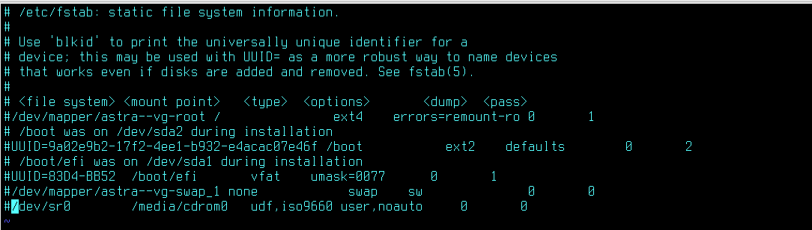А затем выполним перезагрузку и увидим вот такое:
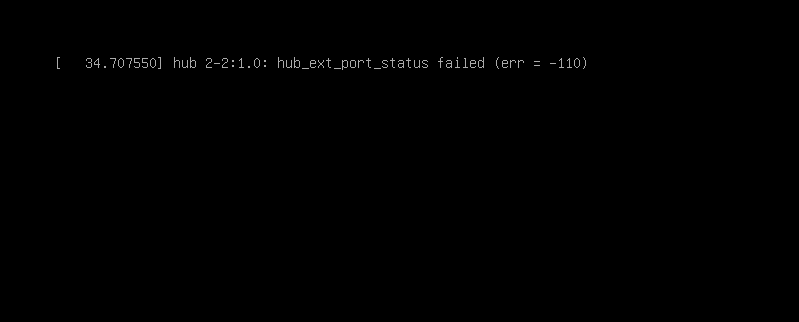Система сломана!
Теперь нужно также подключить установочный диск и загрузиться в режим восстановления.
Алгоритм тот же. Загрузимся в Shell и откроем файл /etc/fstab:
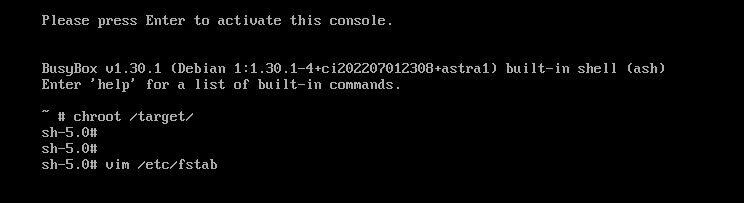Исправляем ошибки в нашем конфигурационном файле:
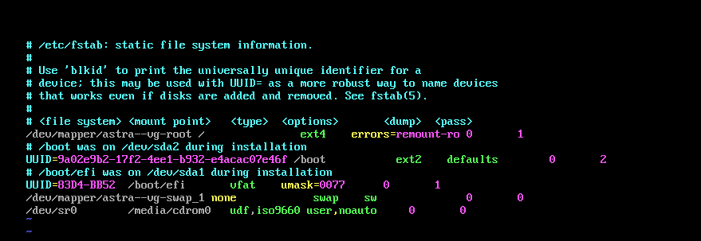А затем также перезагружаемся и наблюдаем рабочую ОС!
Вариантов ошибок, которые могут сложиться в ходе эксплуатации Astra Linux, очень много - но большую часть из них можно решить через режим восстановления без потери данных пользователя.
Восстановление пароля администратора
Наверняка, каждый специалист по внедрению и обслуживанию Astra Linux однажды столкнется с таким несчастьем, как забытый пароль от пользователя Администратор.
Разберем варианты его восстановления, без потери данных на учетной записи.
1. Восстановление через загрузчик GRUB
Для первого варианта вам потребуется вспомнить, какой пароль был назначен на загрузчик GRUB.
Перезагружаем операционную систему, и в поле выбора ядра нажимаем английскую клавишу e:
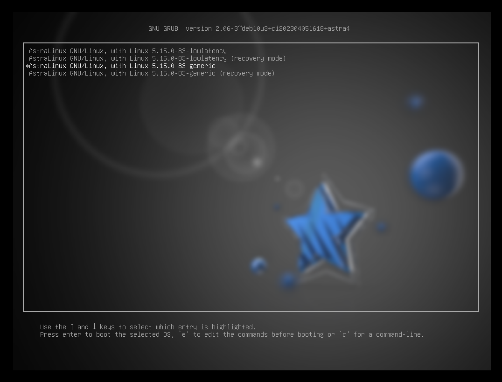Система запросит логин от пользователя Администратора, а затем в поле "пароль" введите не пароль от вашей УЗ, а пароль от GRUB.
Затем, найдите строку, которая начинается со слова Linux:
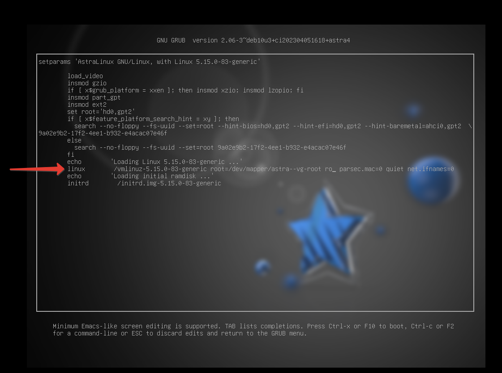В этой строке замените слово ro на rw, а в конце строки добавьте init /bin/bash:
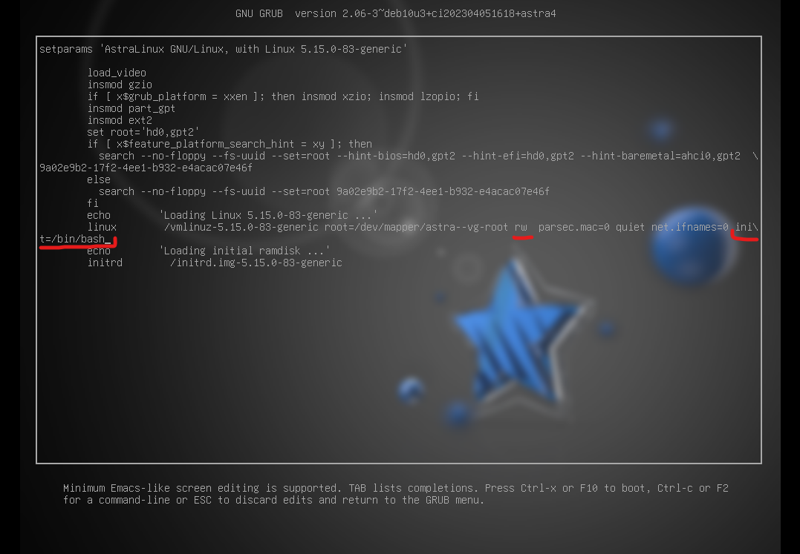Будьте внимательны, что в системе символы "переноса", как в данном случае "/" - устанавливаются автоматически.
После исправления загрузчика, нажмите клавишу F10.
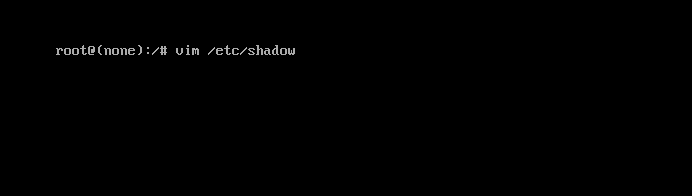Загрузится командная строка, откроем в ней файл хранения теневых паролей - /etc/shadow:
vim /etc/shadowФайл выглядит так:
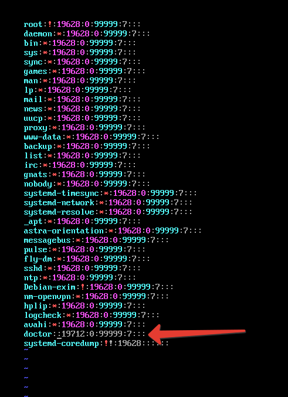Также нужно проверить файл - /etc/shadow-
Если в этом файле также присутствует хэш - его нужно удалить:
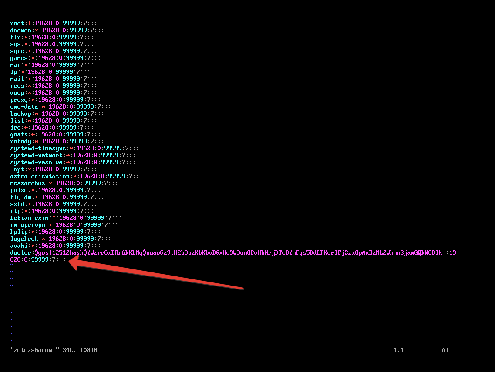После удаления всех хэшей нашего пароля, необходимо перезагрузить систему с помощью команды:
reboot -fПосле загрузки ОС:
Входим под нашим пользователем "doctor" без пароля:
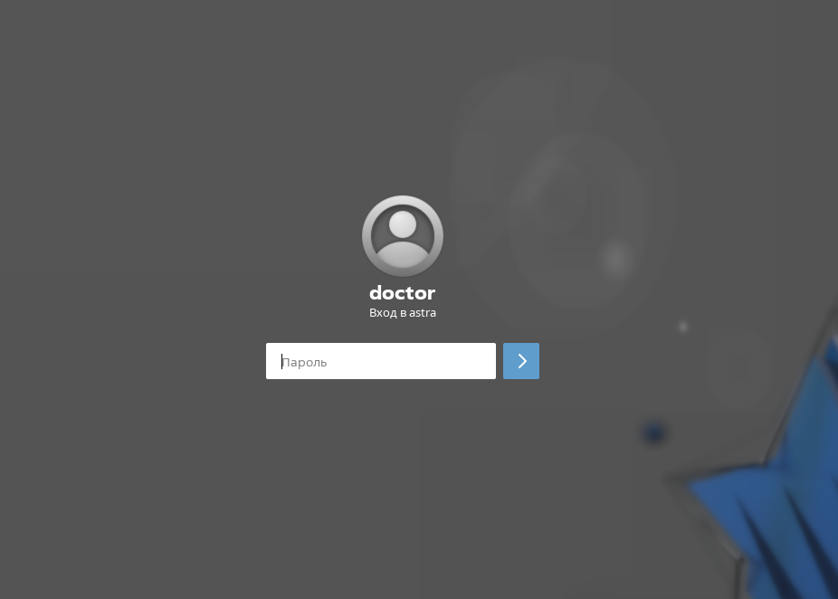И вот мы в системе! Не забываем установить пароль обратно!
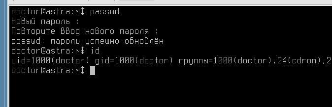2. Восстановление пароля через "Режим восстановления"
Если вдруг и пароль от GRUB забыт, тогда на помощь придет "Режим восстановления".
Загружаемся в режим восстановления известным способом:
- Подключите установочный диск Astra Linux в ваш компьютер, виртуальную машину или сервер.
- Смонтируйте корневой раздел вашей файловой системы
- Выполните сочетание клавиш "Ctrl + Alt + F2", а затем команду:
chroot /target3. Далее вам нужно аналогично удалить хэш-пароля из файлов /etc/shadow и /etc/shadow-
P.S. Если в /etc/shadow- хэш-пароля нет - это не страшно, пропускайте этот шаг. Главное удалить хэш из /etc/shadow.
После этого выполните перезагрузку системы и также войдите под своим пользователем в систему без ввода пароля.
Не забудьте после сброса пароля установить новый пароль!
3. Восстановление пароля без режима восстановления и пароля GRUB
Если день совсем не задался - пароль от GRUB утерян, "Режим восстановления" Astra Linux по каким-то причинам никак не загружается - последней надеждой будет загрузка в Live-режим работы какого-нибудь дистрибутива.
Подойдет любой Live образ, в рамках данной лабораторной работы мы будем использовать Debian 11 Live.
Это нужно знать!
Live образ операционной системы Linux представляет собой полностью готовую к использованию систему, которая может быть загружена с DVD, USB-накопителя или другого съемного устройства без необходимости установки на жесткий диск. При помощи live образа пользователь может протестировать операционную систему, провести восстановление данных, выполнить диагностику, а также использовать ее для рабочих целей без изменения текущей установленной операционной системы.
Скачать такой же дистрибутив в свою коллекцию можно тут: Ссылка
Итак, грузимся с диска и выбираем Live-режим работы:
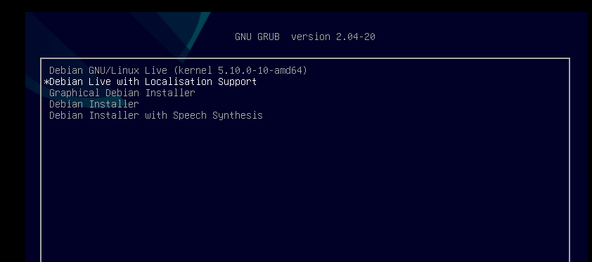- Выбирайте любой удобный для вас язык работы. 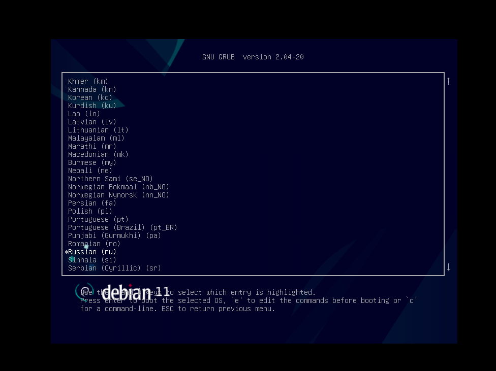
- Перейдите под пользователя root, а затем с помощью команды - lsblk выведите список всех доступных блочных устройств: 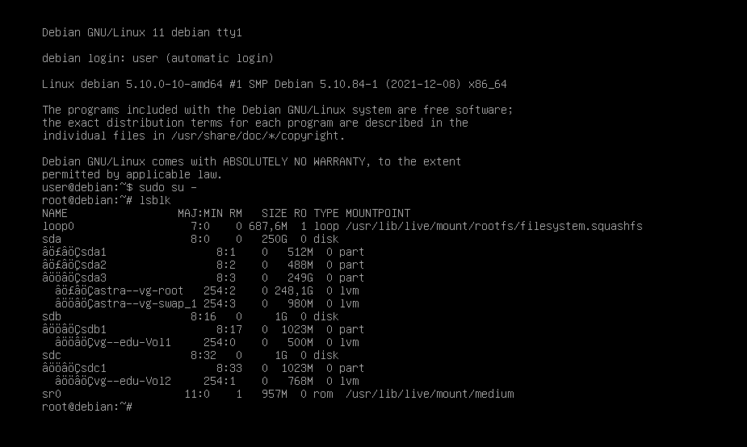
- Перейдем в каталог /mnt, куда смонтировали диск. 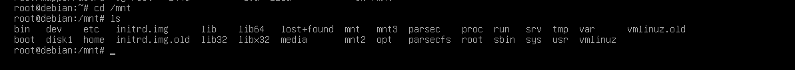
- Удаляем хэш-пароля в /etc/shadow
- Удаляем хэш-пароля в /etc/shadow-
- Перезагружаем систему.
Среди всех доступных устройств, обратите внимание на наш LVM массив!
Нам необходимо примонтировать корневой раздел нашей файловой системы.
Выполним команду:
mount /dev/mapper/astra--vg-root /mntА затем проверим, что блочное устройство появилось в списке подключенных дисков.
df -hУра! Вся наша файловая система на месте, дальше операции аналогичны двум первым пунктам, а именно:
Не забудьте после сброса пароля установить новый пароль!
В целом, подводя итоги стоит сказать, что использование LiveCD образа для исправления ошибок в Astra Linux иногда может быть куда эффективнее и полезнее чем "ограниченный" режим восстановления.
Это достигается за счет того, что в LiveCD вы получаете практически полноценную ОС, куда можно установить различное ПО для отладки вашей системы, мониторинга дисковых проблем и пересборки LVM-массивов.
Подготовка дампа для отправки разработчикам.
Предположим, что вы столкнулись с рядом тяжелых и сложных проблем, которые исправить самостоятельно не получается и пора воспользоваться технической поддержкой.
Что техническая поддержка может у вас спросить?
Как правило, взаимодействие с техподдержкой сводится к отправке логов и дампов с вашей системы.
Попросят они выполнение вот таких команд:
sudo astra-create-debug-logsили
sudo sos report --case-id SIRIUS-1111111или
sudo tar -czf /tmp/astra-logs-SIRIUS-11111-my-pc.tar.gz --exclude=faillog --exclude=lastlog /var/logГде SIRIUS-1111111 - это идентификатор вашей заявки в техподдержку, а my-pc - хостнейм вашего компьютера.
Но что эти команды делают? Давайте разбираться.
Начнем с astra-create-debug-logs
В результате получаем архив:
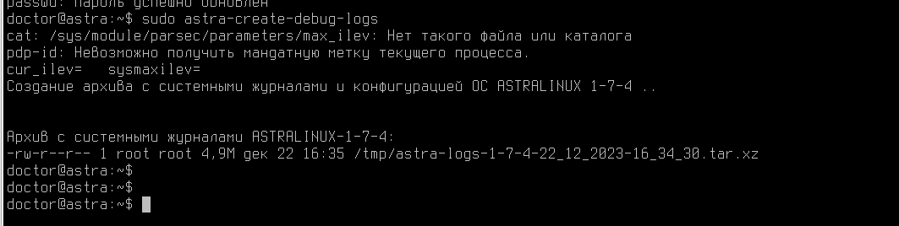Посмотрим что внутри?
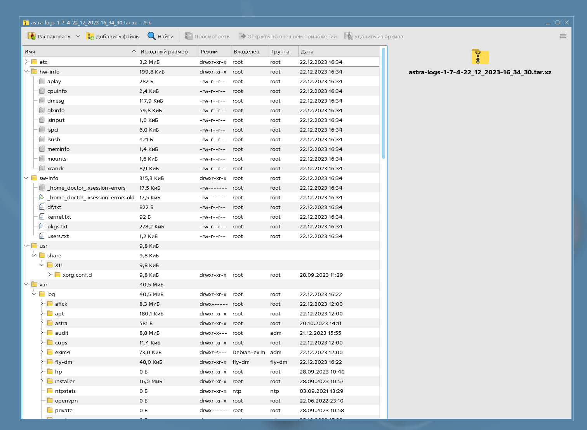Как можно заметить, здесь сохраняется все содержимое каталога /etc, формируется папка hw-info, где записывается информация о всей аппаратной части вашего компьютера.
Также образуется папка sw-info, со сведениями о установленном ПО и ядрах операционной системы и активных пользователях в системе.
Не мало важным является то, что также бекапится весь каталог /var/log - помните, что это каталог, в котором содержатся служебные журналы большинства работающих процессов.
Если вы отправляете специалистам техподдержки запрос, приложите этот архив к запросу - чтобы дело пошло немного быстрее.
Я отправил запрос в техподдержку с архивом, но они требуют от меня еще каких-то выгрузок?
Разберемся, что выполняет команда:
sudo sos report --case-id SIRIUS-1111111Если прошлая команда предоставляется от разработчиков Astra Linux, то sos report - стандартная команда генерации логов от Debian.
Она также выполняет глубокий анализ состояния операционной системы и запаковывает это в архив, который затем планируется отправить разработчикам.
Как правило, ключом case-id вы указываете номер вашей заявки в технической поддержке.
Что внутри архива?
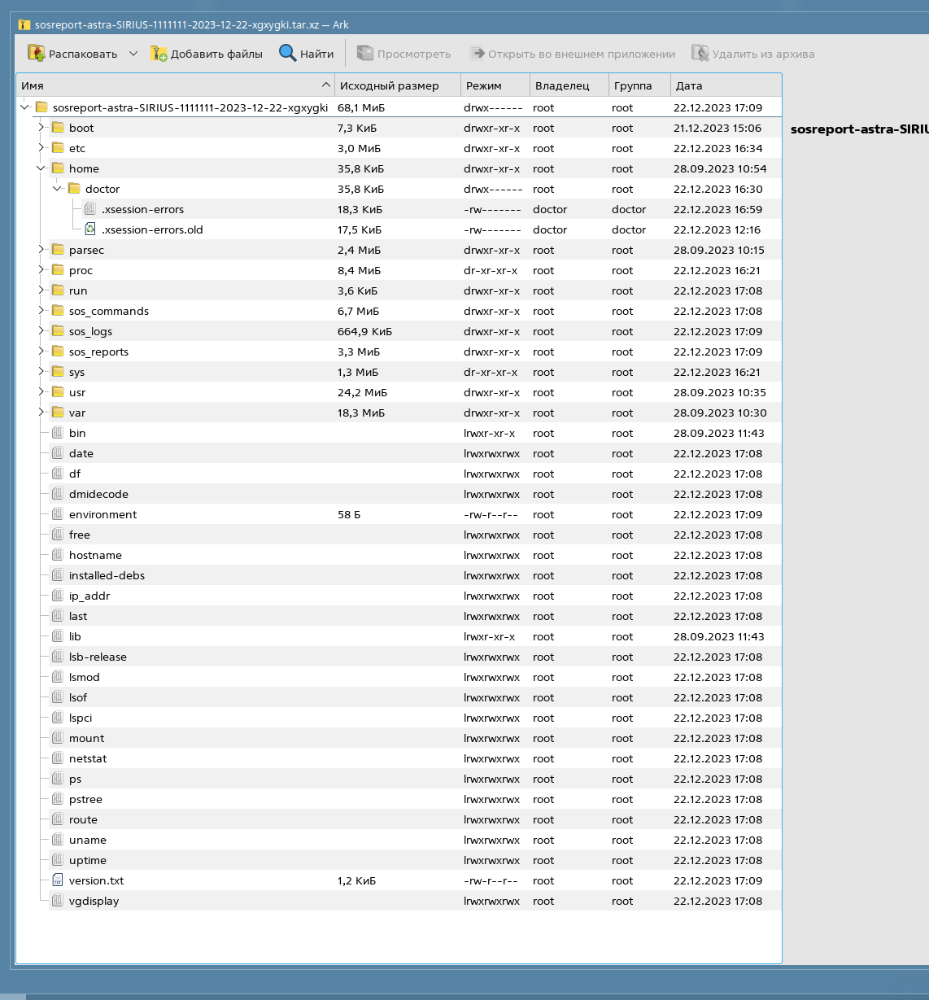Примерно тоже самое, только теперь еще раздел /boot запаковали, сведения о подключенных драйверах и модулях ядра, установленное программное обеспечение, запущенные в системе процессы и журналы логов.
Также собирается информация о домашних профилях пользователей, но не личная информация - а ошибки связанные с работой графических утилит.
Им все мало и мало! Теперь что-то еще хотят!
Когда ситуация требует глубочайшего анализа, иногда потребуется воспользоваться последней командой:
sudo tar -czf /tmp/astra-logs-SIRIUS-11111-my-pc.tar.gz --exclude=faillog --exclude=lastlog /var/logКоманда sudo tar -czf /tmp/astra-logs-SIRIUS-11111-my-pc.tar.gz --exclude=faillog --exclude=lastlog /var/log создает сжатый архив /tmp/astra-logs-SIRIUS-11111-my-pc.tar.gz из содержимого каталога /var/log, однако исключает файлы с именами faillog и lastlog из этого архива.
Файлы faillog и lastlog являются системными файлами журналов, хранящими информацию о неудачных попытках входа пользователей в систему (faillog) и о времени последнего входа пользователей в систему (lastlog). Эти файлы обычно находятся в каталоге /var/log на системах Linux. В данном контексте их исключение из архива означает, что они не будут включены в созданный архив.
Заключение
В рамках этой лабораторной вы научились работать с восстановлением загрузчика GRUB и раздела /boot, а также сбрасывать пароль для пользователя Администратор.
Помимо этого мы разобрали как правильно написать заявку в техническую поддержку, если вдруг все пошло совсем не по плану.
В следующем материале вы познакомитесь с темой - Управление конфигурациями хостов с помощью Ansible
Благодарю за чтение и успехов вам в обучении!